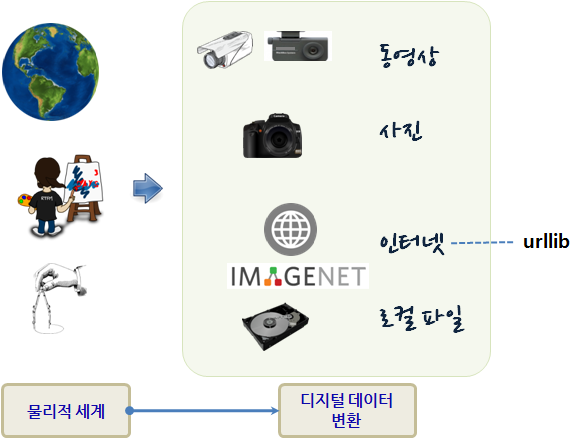

xwMOOC 고생대 프로젝트
작업 파이프라인
1. 작업 파이프라인
물리적 세계를 시각정보 저장하는 방식은 여러가지가 존재한다. 크게 보면 시간정보도 함께 저장하는 동영상 저장방식과 사진 이미지를 통해 저장하는 방식이 있다. 있는 실물 그대로 저장하는 이미지 정보가 있는 반면에, 사람이 그림을 그리거나, 기계를 사용하여 작도한 이미지도 상당히 많이 존재한다.

물리적 세계에서 화가가 그린 그림이든, 기계로 작도한 도면이든, 사진을 촬영한 것이든 관계없이 파일 형태로 존재하게 되고 이것을 가져오는데 다양한 파일처리 핸들러를 사용한다.